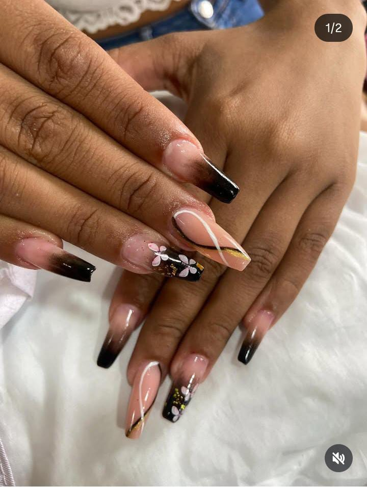

Projetos

Wacth-shop
O smartwatch mais avançado do mercado. Monitoramento completo de saúde, GPS integrado, tela AMOLED de alta resolução e bateria de longa duração. Perfeito para acompanhar seu estilo de vida ativo.
Ver projetos
FP-SELLECTION
Venha conhecer esse novo modelo Ferrari v8 ConversíveL Criado com HTML, CSS JAVASCRIPT
Ver projeto
Cafeteria
Cafeteria criado com HTML, CSS, JAVASCRPT. Permite você experimentar o melhor café da região
Ver projeto

Sobre mim
Desenvolvedor com paixão de criar soluções digitais
Meu nome é Aline, Estou migrando para a área de tecnologia, dedicada ao aprendizado de linguagens e frameworks de programação.
Minha abordagem combina criatividade com funcionalidade, resultado em produtos digitais que são tanto bonitos quanto eficiente.
HTML5
CSS
javaScript
Banco de dados-oracle
PHP-Lavavél
Programador-mobile
SQL-Server
Java-Java2.0-Javaweb2.0
UML
POO
NODE